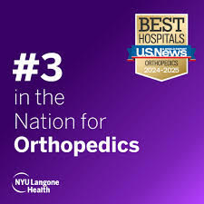

Board Certified Orthopedic Surgeon
At the forefront of spine surgery innovation, Dr. Neel P. Shah brings together cutting-edge technology and compassionate care. As a board-certified orthopedic spine surgeon, he has dedicated his practice to advancing minimally invasive techniques that prioritize both precision and patient comfort. His expertise in microscopic spine surgery and motion preservation has established him as a leader in modern spinal care.
While mastering the complexities of advanced spine surgery, Dr. Shah remains guided by a simple yet powerful philosophy: "Less is more." This approach reflects his commitment to achieving maximum benefits through minimal intervention, carefully selecting the least invasive treatment options that will effectively restore his patients' quality of life.
Dr. Shah's approach to spine care is built on four fundamental pillars:
Precision techniques to relieve pressure and restore proper nerve function
Advanced methods to ensure spinal stability and long-term structural integrity
Innovative solutions to address and correct spinal misalignments
Cutting-edge techniques to maintain natural spinal movement
Every patient's journey is unique, and Dr. Shah takes pride in providing individualized attention that goes beyond standard care protocols. He believes in taking the time to truly understand each patient's specific needs, lifestyle, and goals. This personalized approach allows him to develop treatment plans that not only address immediate concerns but also support long-term spinal health.
Dr. Shah's decision to leave corporate medicine stems from his commitment to treat patients like family and build lasting relationships. He is opposed to the current trend in healthcare where patients are treated on a conveyor belt and clinics become revolving doors. Instead, he strives to spend as much time as needed with each patient, rather than adhering to the allotted times dictated by corporate healthcare and insurance companies.
"I treat every patient as if they were family," Dr. Shah often says, "and that means taking the time to explore all options and find the solution that best fits their individual needs." This philosophy has shaped his practice into one where patients feel heard, understood, and confident in their treatment decisions.
Dr. Shah is on staff at one of the top hospitals in the country, NYU Langone Hospital. Before returning to NYC, he was in practice in Southern California at one of the most highly rated orthopedic practices, DISC Sport and Spine.
Board Certified Orthopedic Surgeon

#3 in the Nation for Orthopedics" - U.S. News & World Report
Schedule a consultation with Dr. Shah
When Dr. Shah isn't busy returning his patients to top shape, you can find him honing his skiing skills down double-black diamonds or exploring New York City. He enjoys spending his free time being active and outdoors with his wife, son, and their Australian Shepherd, Bodhi.